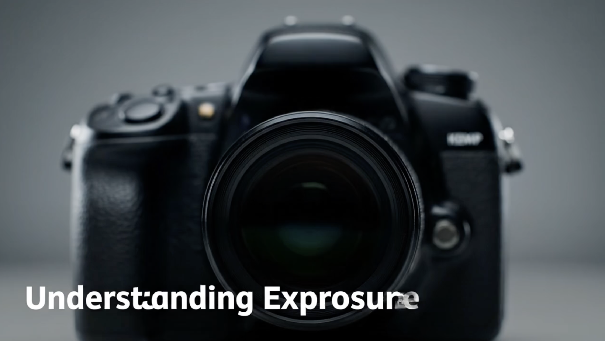

Module 1: Parts of the Camera

Shutter Speed
How long the camera’s shutter stays open to let light in. Fast shutter speeds freeze action, while slow speeds create motion blur.
💡
Think of it like:
It's like how long you keep your eyes open when looking at something moving. Blink fast = freeze the moment. Keep them open longer = blur from movement.
Example
- Fast (1/1000s) = Freeze a running athlete mid-stride
- Medium (1/60s) = Normal handheld photos
- Slow (1s) = Smooth waterfalls, light trails from cars